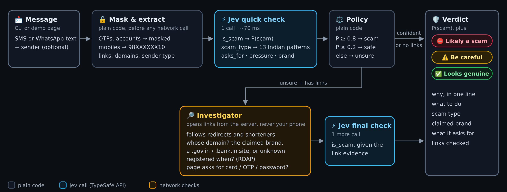
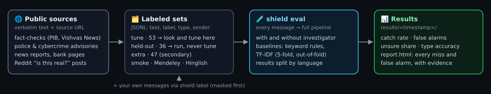
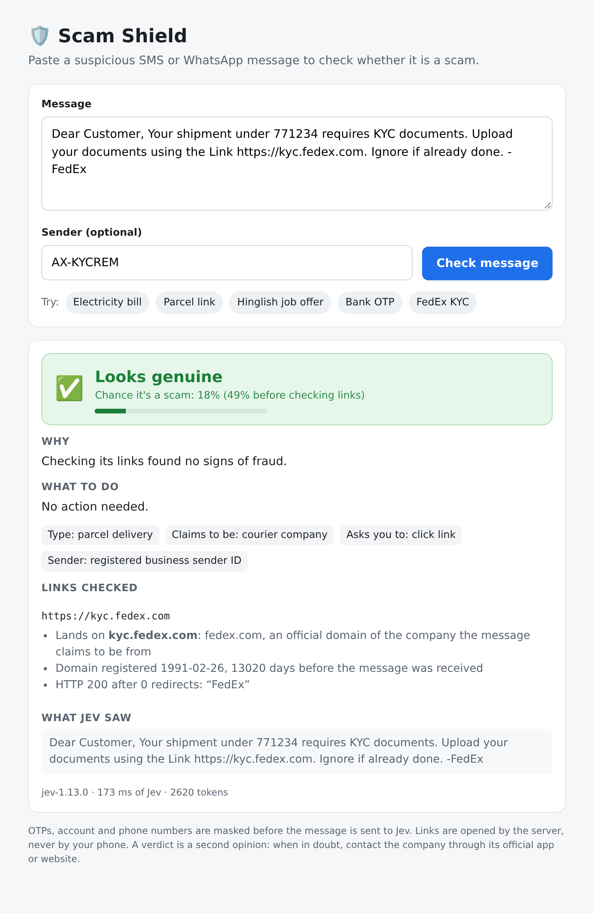
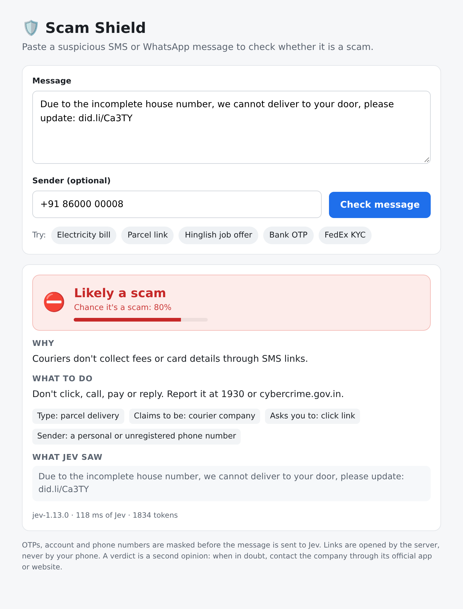

A second opinion on scam texts in under a second: Scam Shield, built with Jev
"Dear Customer, your electricity connection will be disconnected tonight at 9:30 PM because your previous month bill was not updated. Please contact our electricity officer 98XXXXXX10 immediately."
If you live in India, you have seen a message like this. Maybe your parents have too, and maybe they called the number. Fake traffic e-challans, parcels "held at the warehouse", KYC updates "or your account will be blocked", part-time jobs that pay you to like YouTube videos. The scripts change every few months. The shape doesn't.
I wanted something simple: paste a suspicious message and get a second opinion in under a second. A verdict, the kind of scam, one line on why, and what to do next.
TL;DR
| What I built | Scam Shield: paste an SMS or WhatsApp message and get likely a scam, be careful or looks genuine, with the kind of scam, the reason and what to do. A command-line tool and a one-page web demo. |
| How | One call to Jev, TypeSafe's judgment model, answers five questions about the message. Plain code turns the answers into a verdict. When it is unsure and the message has links, an investigator checks where the links really go, and Jev looks again with that evidence. |
| The data | 89 real messages received in India, collected from public fact-checks, police advisories, news reports and Reddit, including genuine messages that people mistook for scams. Split into a tuning set and a held-out set before any tuning. |
| Results | On the 36 held-out messages: 93% of scams caught, no genuine message called a scam, 11% left as "be careful". A classic text classifier caught every scam but also flagged every genuine message. |
| Cost | About 70 ms and roughly $7.50 per 100,000 messages for the quick check. |
This is a small, exploratory project. The limits are spelled out at the end.
A model that judges instead of writes
Most AI tools write: answers, emails, code. A scam checker doesn't need to write anything. It needs to make a few judgments, very quickly, about a very large number of messages: is this a scam, what kind, what does it want from me?
That is what Jev does. Jev is TypeSafe's "System One" model. You give it some text and a few typed questions, and it returns an answer to each with a probability. It never generates prose. It answers in about 70 milliseconds and costs $0.042 per million input tokens.
Every message gets one Jev call with five questions:
- Is this a scam? A yes/no answer as a probability.
- What kind? One of 13 Indian scam patterns (KYC block, bill disconnection, e-challan, parcel, job task, loan, investment, lottery, refund, reward points, impersonation, OTP request, free-recharge "schemes"), or genuine alert, genuine promotion, personal chat or "unclear".
- What does it ask you to do? Open a link, call a number, share an OTP, pay, install an app, reply, or nothing.
- How much pressure does it put on you?
- Which organisation does it claim to be from?
A few lines of ordinary code turn those answers into a verdict. At 80% or more it is a scam; at 20% or less it is safe; in between it says "be careful". Those thresholds are a product decision, not a model setting, and keeping them in plain code makes that visible.
Privacy comes first in the pipeline. Before anything leaves the machine, OTPs, account numbers, card and Aadhaar numbers, and phone numbers are masked. Phone numbers keep their shape (98XXXXXX10), because "asks you to call a personal mobile number" is itself a clue.

The hard part was data
The public "smishing" datasets I found were mostly old UK premium-rate texts ("You have won £1,000, txt CLAIM to 80082"). Useful as a sanity check; nearly useless for today's Indian scams.
The obvious fix was to export real inboxes. I decided against it: I wasn't willing to risk anyone's personal messages. Instead I collected messages that were already public:
- Fact-checks that debunk viral messages, such as PIB Fact Check and Vishvas News.
- Police and cybercrime advisories, which quote the texts going around.
- News reports quoting messages people received.
- Reddit threads where someone pastes a message and asks "is this real?"
That last source gave me something I hadn't expected: genuine messages that looked like scams. A courier's customs KYC request. A security alert with a short link. An income tax refund notice. A credit card agent asking you to share a reference number. These are exactly the messages a scam checker must not flag, and they are the hardest to find.
I kept only messages whose full text was printed or shown in a screenshot; anything paraphrased or partial was dropped. That left 89 real received messages: 68 scams, 19 genuine messages and 2 promotions, each with its source link and date. Bank-written examples, Facebook posts and translations went into a separate, secondary set.
Then, before changing anything, I split the 89 into a tuning set (53) and a held-out set (36). Every change was made by looking at the tuning set only. The held-out set was run, never studied.

Results
On the 36 held-out messages:
| Scams caught | Genuine messages called scams | Left as "be careful" | |
|---|---|---|---|
| Scam Shield (Jev) | 93% (25 of 27) | 0 of 8 | 11% |
| Text classifier (TF-IDF) | 100% | 8 of 8 | – |
| Keyword rules | 48% | 0 of 8 | – |
The middle row is the lesson. A classic text classifier trained on this little data catches every scam because it flags everything that looks like an alert, genuine bank messages included. A scam shield that flags your bank's OTP gets uninstalled in a day. False alarms are the number that matters, and Scam Shield had none on the held-out set, or on the tuning set.
Across all 89 messages, it called only two scams safe, and both are fair misses for a tool that only reads text. One, in the held-out set, was a Hindi WhatsApp message whose real danger was an APK file sent with it; the words alone were harmless. The other was a single line from a task-scam chat ("open Google Maps and search for this hotel") that only looks suspicious once you have read the rest of the conversation.
Following the links
Most "be careful" messages contain a link, and a link can be checked. So I added an investigator. When the quick check is unsure, it opens each link from the server (never from your phone) and:
- follows redirects and link shorteners to where the link really lands;
- checks who owns that domain: the organisation the message claims to be from, a government or bank-only domain (.gov.in, .nic.in, .bank.in), some other company, or a link shortener anyone can use;
- looks up when the domain was registered (a week-old "bank" site is a red flag);
- reads the landing page for card, OTP or password fields, and notes app (APK) downloads without downloading them.
Jev then answers "is this a scam?" again, with that evidence in front of it.


To be honest about it: on the held-out set, the investigator moved the right numbers in the right direction but didn't change a single verdict. A genuine courier message went from 55% to 23%, just above the "safe" line. Old scam links are mostly dead by the time anyone collects them, so a live deployment would see far more evidence than this evaluation did. On the tuning set it did flip three messages, all correctly: two parcel scams to "scam" and one genuine security alert to "safe".
What I learned
- Decide which mistake is worse before you measure anything. Here it is false alarms. That one decision changed which method looked best.
- "Be careful" is a feature. A tool that says "check this in the official app" is more useful than one that guesses confidently.
- Your own test messages flatter you. The 47 messages I wrote myself scored 100%. Real ones didn't.
- Public data has a bias. The scams that make the news are cleaner and more typical than what lands in a real inbox.
- A better list of categories beat clever wording. Free-recharge forwards ("Ambani is giving every Jio user ₹719 of free recharge") kept getting lumped in with lotteries. Giving them their own category raised scam-type accuracy on the held-out set from 81% to 93%.
- The next step was blocked by search, not by AI. I wanted an agent that could look up whether a message's wording is a known scam, or what a company's real helpline is. No free web search works from a server without an API key, so that part waits.
Limits
- Text only. No screenshots, attachments or voice calls, so an APK sent as a file or a "digital arrest" call isn't covered.
- Not in your inbox. You paste or forward the message; it doesn't read or block anything on your phone.
- Phone-only scams often stay at "be careful". "Call officer 98…" has no link to check, and there is no free way to look up a number.
- Small test set. 36 held-out messages, only 8 of them genuine, and few in Hindi or Hinglish. One more false alarm would move the rate by 12 points. Treat 93% as a promising start, not a proven rate.
Try it
git clone https://github.com/mani-bellan/jev-apps && cd jev-apps/scam-shield
export TYPESAFE_API_KEY=... # from https://console.typesafe.ai/keys
uv run shield check "Your electricity will be disconnected tonight. Call officer 9876543210"
uv run shield serve --port 8000 # the web demo
uv run shield eval data/public_india_heldout.jsonl
The repository includes the labeled public messages with their sources, the evaluation harness with both baselines, and a labeling tool that masks private numbers before saving, if you want to test it on messages of your own.